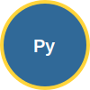

Serial, Modbus, InfluxDB for Device Communication
Advantages: - Rich ecosystem of libraries - Easy hardware interfacing - Powerful data processing - Cross-platform compatibility - Rapid prototyping
Popular Libraries: - pyserial - Serial communication - pymodbus - Industrial protocols - influxdb-client - Time-series DB - paho-mqtt - IoT messaging - asyncio - Concurrent I/O
import serial
import time
# Connect to device
ser = serial.Serial('/dev/ttyUSB0', baudrate=9600, timeout=1)
# Send command
ser.write(b'READ_SENSORS\n')
# Read response
response = ser.readline()
data = response.decode('utf-8').strip()
# Parse data
if ':' in data:
temp, humidity = data.split(',')
temp_value = float(temp.split(':')[1])
humidity_value = float(humidity.split(':')[1])
ser.close()class ArduinoInterface:
def __init__(self, port='/dev/ttyACM0'):
self.ser = serial.Serial(port, 9600, timeout=2)
time.sleep(2) # Arduino reset delay
def read_sensors(self):
self.ser.write(b'GET_DATA\n')
response = self.ser.readline()
try:
data = json.loads(response.decode())
return {
'temperature': data['temp'],
'humidity': data['hum'],
'timestamp': datetime.now()
}
except:
return None
def control_led(self, pin, state):
command = f"LED,{pin},{'ON' if state else 'OFF'}\n"
self.ser.write(command.encode())What is Modbus? - Industrial communication protocol - Master-slave architecture - TCP/IP and serial variants - Standard for PLCs and sensors
Data Types: - Coils - Digital outputs (R/W) - Discrete Inputs - Digital inputs (RO) - Input Registers - Analog inputs (RO)
- Holding Registers - Analog values (R/W)
from pymodbus.client.sync import ModbusTcpClient
class ModbusController:
def __init__(self, host='192.168.1.100', port=502):
self.client = ModbusTcpClient(host, port=port)
self.connected = self.client.connect()
def read_sensors(self):
# Read holding registers (temperature, pressure, flow)
result = self.client.read_holding_registers(0, 3, unit=1)
if result.isError():
return None
return {
'temperature': result.registers[0] / 100.0, # °C
'pressure': result.registers[1] / 10.0, # bar
'flow_rate': result.registers[2] # L/min
}
def control_pump(self, pump_id, state):
# Write coil to control pump
self.client.write_coil(pump_id, state, unit=1)class IndustrialSystem:
def __init__(self):
self.plc = ModbusController('192.168.1.100')
self.setpoints = {'temperature': 25.0, 'pressure': 2.5}
def monitor_process(self):
sensors = self.plc.read_sensors()
# Temperature control
if sensors['temperature'] > self.setpoints['temperature'] + 2:
self.plc.control_pump(0, False) # Stop heating
elif sensors['temperature'] < self.setpoints['temperature'] - 2:
self.plc.control_pump(0, True) # Start heating
# Pressure safety
if sensors['pressure'] > 3.0:
self.plc.control_pump(1, False) # Emergency stop
self.send_alert("High pressure detected!")
return sensorsfrom influxdb_client import InfluxDBClient, Point
from influxdb_client.client.write_api import SYNCHRONOUS
class IoTDataManager:
def __init__(self, url, token, org, bucket):
self.client = InfluxDBClient(url=url, token=token, org=org)
self.write_api = self.client.write_api(write_options=SYNCHRONOUS)
self.query_api = self.client.query_api()
self.bucket = bucket
self.org = org
def write_sensor_data(self, device_id, location, measurements):
points = []
for field, value in measurements.items():
point = Point("sensors") \
.tag("device_id", device_id) \
.tag("location", location) \
.field(field, value)
points.append(point)
self.write_api.write(bucket=self.bucket, org=self.org, record=points)def get_device_stats(self, device_id, hours=24):
query = f'''
from(bucket: "{self.bucket}")
|> range(start: -{hours}h)
|> filter(fn: (r) => r.device_id == "{device_id}")
|> group(columns: ["_field"])
|> aggregateWindow(every: 1h, fn: mean, createEmpty: false)
|> yield(name: "hourly_average")
'''
result = self.query_api.query(org=self.org, query=query)
stats = {}
for table in result:
for record in table.records:
field = record.get_field()
value = record.get_value()
time = record.get_time()
if field not in stats:
stats[field] = []
stats[field].append({'time': time, 'value': value})
return statsclass IoTMonitoringSystem:
def __init__(self):
self.devices = {}
self.data_queue = queue.Queue()
self.influx_client = IoTDataManager(...)
self.running = False
def add_device(self, device_id, device_type, **config):
if device_type == 'serial':
device = ArduinoInterface(config['port'])
elif device_type == 'modbus':
device = ModbusController(config['host'])
self.devices[device_id] = {
'interface': device,
'config': config,
'last_reading': None
}
def collect_data(self):
while self.running:
for device_id, device_info in self.devices.items():
try:
data = device_info['interface'].read_sensors()
if data:
self.data_queue.put((device_id, data))
except Exception as e:
logger.error(f"Error reading {device_id}: {e}")
time.sleep(5) # Read every 5 secondsdef process_data(self):
while self.running:
try:
device_id, data = self.data_queue.get(timeout=1)
# Add metadata
data['device_id'] = device_id
data['timestamp'] = datetime.now()
# Validate data
if self.validate_data(data):
# Store in InfluxDB
self.influx_client.write_sensor_data(
device_id=device_id,
location=self.devices[device_id]['config']['location'],
measurements=data
)
# Check alerts
self.check_alerts(device_id, data)
self.data_queue.task_done()
except queue.Empty:
continue
except Exception as e:
logger.error(f"Error processing data: {e}")def check_alerts(self, device_id, data):
"""Check for alert conditions"""
alerts = []
# Temperature alerts
if 'temperature' in data:
temp = data['temperature']
if temp > 30:
alerts.append(f"High temperature: {temp}°C")
elif temp < 10:
alerts.append(f"Low temperature: {temp}°C")
# Pressure alerts
if 'pressure' in data:
pressure = data['pressure']
if pressure > 3.0:
alerts.append(f"High pressure: {pressure} bar")
# Send notifications
for alert in alerts:
self.send_notification(device_id, alert)
def send_notification(self, device_id, message):
"""Send alert notification"""
# Email, SMS, Slack, etc.
logger.warning(f"ALERT [{device_id}]: {message}")class SmartGreenhouse:
def __init__(self):
self.arduino = ArduinoInterface('/dev/ttyACM0')
self.data_manager = IoTDataManager(...)
self.optimal_conditions = {
'temperature': (20, 28), # Min, Max
'humidity': (60, 80),
'soil_moisture': (30, 70)
}
def monitor_and_control(self):
# Read sensors
sensors = self.arduino.read_sensors()
# Log data
self.data_manager.write_sensor_data(
'greenhouse_001', 'facility_a', sensors
)
# Automated control
if sensors['temperature'] > 28:
self.arduino.control_fan(True)
if sensors['soil_moisture'] < 30:
self.arduino.control_irrigation(True)
return sensorsclass FactoryMonitoring:
def __init__(self):
self.plc = ModbusController('192.168.1.100')
self.data_manager = IoTDataManager(...)
self.production_line = {
'target_rate': 1000, # units/hour
'efficiency_threshold': 0.85
}
def monitor_production(self):
# Read production data
data = self.plc.read_production_counters()
# Calculate efficiency
current_rate = data['units_produced'] / data['runtime_hours']
efficiency = current_rate / self.production_line['target_rate']
# Store metrics
metrics = {
'production_rate': current_rate,
'efficiency': efficiency,
'downtime': data['downtime_minutes'],
'quality_score': data['quality_percentage']
}
self.data_manager.write_equipment_status('line_001', metrics)
# Alerts
if efficiency < 0.85:
self.send_alert(f"Low efficiency: {efficiency:.2%}")def retry_on_failure(max_retries=3, delay=1.0):
def decorator(func):
@functools.wraps(func)
def wrapper(*args, **kwargs):
for attempt in range(max_retries):
try:
return func(*args, **kwargs)
except Exception as e:
if attempt == max_retries - 1:
raise e
time.sleep(delay)
return wrapper
return decorator
@retry_on_failure(max_retries=5, delay=2.0)
def read_device_data(device):
return device.read_sensors()class CircuitBreaker:
def __init__(self, failure_threshold=5, timeout=60):
self.failure_threshold = failure_threshold
self.timeout = timeout
self.failure_count = 0
self.last_failure_time = None
self.state = 'CLOSED' # CLOSED, OPEN, HALF_OPEN
def call(self, func, *args, **kwargs):
if self.state == 'OPEN':
if time.time() - self.last_failure_time > self.timeout:
self.state = 'HALF_OPEN'
else:
raise Exception("Circuit breaker is OPEN")
try:
result = func(*args, **kwargs)
self.on_success()
return result
except Exception as e:
self.on_failure()
raise eclass OptimizedIoTSystem:
def __init__(self):
self.connection_pool = {} # Reuse connections
self.data_buffer = [] # Batch writes
self.cache = {} # Cache recent readings
async def async_data_collection(self):
"""Asynchronous data collection for better performance"""
tasks = []
for device_id in self.devices:
task = asyncio.create_task(self.read_device_async(device_id))
tasks.append(task)
results = await asyncio.gather(*tasks, return_exceptions=True)
# Process results
for device_id, result in zip(self.devices, results):
if not isinstance(result, Exception):
self.data_buffer.append((device_id, result))
def batch_write_to_influx(self):
"""Batch write for better performance"""
if len(self.data_buffer) >= 100: # Write in batches of 100
points = self.prepare_points(self.data_buffer)
self.influx_client.write_points(points)
self.data_buffer.clear()Create a temperature monitoring system:
class TemperatureMonitor:
def __init__(self, port, alert_threshold=30.0):
self.port = port
self.threshold = alert_threshold
# TODO: Initialize serial connection
def read_temperature(self):
# TODO: Read temperature from sensor
pass
def check_alerts(self, temperature):
# TODO: Check if temperature exceeds threshold
pass
def log_data(self, temperature):
# TODO: Log to file or database
pass
# Requirements:
# 1. Read temperature every 5 seconds
# 2. Send alert if temperature > threshold
# 3. Log all readings with timestampsBuild a Modbus data logging system:
class ModbusDataLogger:
def __init__(self, host, registers_config):
self.host = host
self.registers = registers_config
# TODO: Initialize Modbus client
def read_all_registers(self):
# TODO: Read all configured registers
pass
def save_to_csv(self, data, filename):
# TODO: Save data to CSV file
pass
def generate_report(self, hours=24):
# TODO: Generate summary report
pass
# Configuration example:
registers_config = {
0: {'name': 'temperature', 'scale': 0.1, 'unit': '°C'},
1: {'name': 'pressure', 'scale': 0.01, 'unit': 'bar'},
2: {'name': 'flow_rate', 'scale': 1.0, 'unit': 'L/min'}
}Create a real-time IoT dashboard:
class IoTDashboard:
def __init__(self):
self.devices = {}
self.data_history = {}
def add_device(self, device_id, device_interface):
# TODO: Add device to monitoring
pass
def update_dashboard(self):
# TODO: Read from all devices and update display
pass
def generate_charts(self):
# TODO: Create matplotlib/plotly charts
pass
def export_data(self, format='json'):
# TODO: Export data in various formats
pass
# Features to implement:
# 1. Real-time data display
# 2. Historical charts
# 3. Alert notifications
# 4. Data export capabilitiesCore Technologies: - Serial communication with PySerial - Modbus industrial protocols - InfluxDB time-series storage - Asynchronous I/O patterns - Error handling strategies
Practical Skills: - Device interfacing - Real-time monitoring - Data logging and analysis - Alert systems - Performance optimization
Ready to connect the physical and digital worlds with Python!
Next: Apply these skills to real IoT projects! 🌐🔧

Python Tutorial - IoT Connectivity